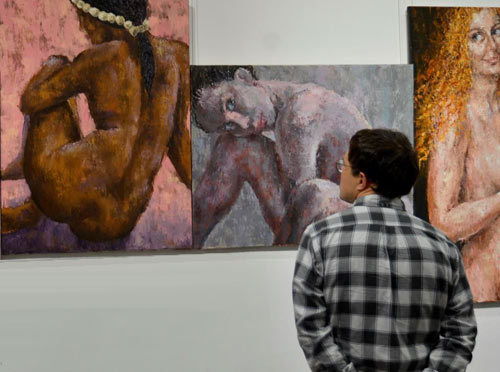
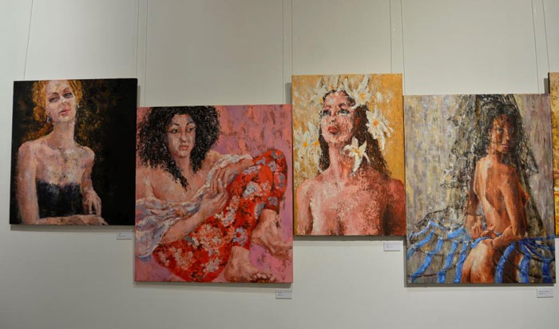
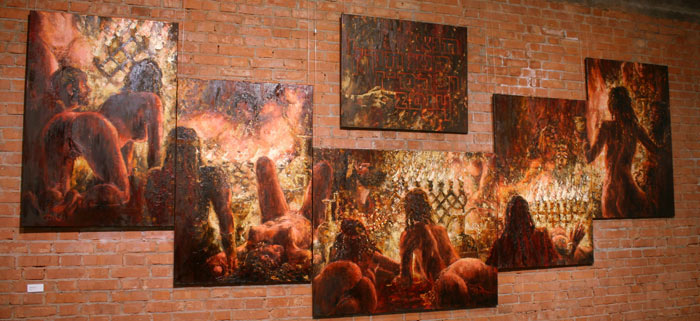
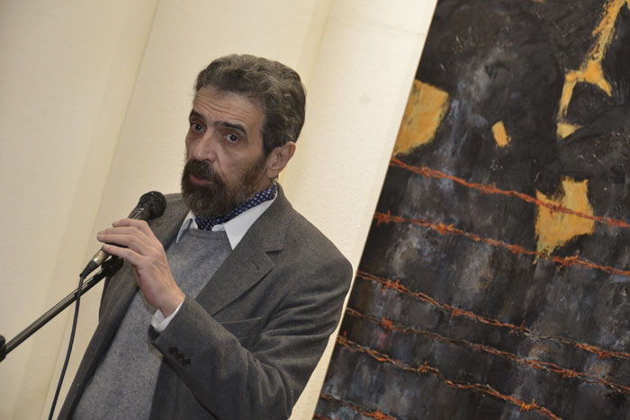

Лепорелло
Рассматривая лепорелло «Drama of Fine Arts» с выставки художника Анатолия Чечика
Анатолий Чечик родился в 1953 году в Киеве. С 1992 года живёт в Москве. Сценограф, живописец. Член Московского союза художников. Более 20 персональных выставок. Более 40 поставленных спектаклей в театрах Украины, России, Европы. В настоящее время израильтянин. Выставка «LEPORELLO» проходила в ноябре – декабре 2016 года в Театральном музее имени А.А.Бахрушина
https://www.youtube.com/watch?v=KqtDKx1JdKw&feature=youtu.be
Возможно, стихийно, а, может быть, по выдумке какого-то талантливого почтового служащего, набор открыток, сложенных гармошкой, стали именовать лепорелло. Это не просто звучное словечко, а самая что ни на есть дань подлинному герою, который на протяжении столетий вызывает у нас сочувствие и презрение, хохот и шутливое негодование. Это памятник Лепорелло - вездесущему слуге Дон Жуана. И не случайно «награда нашла героя», а потому что во второй картине оперы Вольфганга Амадея Моцарта «Дон Жуан или наказанный развратник» (либретто Лоренцо да Понте) вышеназванный Лепорелло достал и продемонстрировал донне Эльвире длинный список обольщённых Дон Жуаном красавиц.
«Вот извольте! Этот список красавиц
Я для вас, так и быть, уж открою,
Он написан моею рукою; Вот, глядите, следите за мной!
Их в Италии шестьсот было сорок,
А в Германии двести и тридцать, сотня француженок, турчанок девяносто,
Ну, а испанок – а испанок, так тысяча три!»
Но это ещё не вся история. Далее энциклопедия: «Поскольку разворачивать такой список, свёрнутый в свиток, весьма неудобно для артиста, часто в постановках оперы он участвует, сложенный «гармошкой». Вот! Теперь всё. Поэтому возник набор-раскладушка, лепорелло.
И всё это выдумки, фантазии, игра воображения. Всё это искусство! Думаю, именно по этой причине Анатолий Чечик дал своей выставке название LEPORELLO. DRAMA OF FINE ARTS.

Вначале я не знала, что полотна сопровождают репродукции картин великих мастеров. Я включилась в игру и увлеклась, разгадывая, какие прототипы стали исходной материей для взрыва и расширения этой невероятной вселенной. Разгадывая по ракурсу, выражению глаз, по присутствующей на втором плане («I am over it»), или вовсе отсутствующей (Are you jealous? Whom to? To you?), даже по подписи, зашифрованной, либо провокативной.
А с прототипами стало ещё интересней. Возник объём. Осознание, что автору тесно в одном жанре, и он ведёт двойную, тройную игру перетекания смыслов, совмещения понятий, сплетения аллюзий. Впрочем, мы были предупреждены: нас ожидает «Drama of Fine Arts». Драма в изобразительном искусстве, или драма средствами изобразительного искусства? Уже первоначальное перечисление действующих лиц обещало театр. Так театр или выставка? Оказывается, и то, и другое, и ещё многое.

Мощная, чувственная живопись, которой, казалось бы, достаточно для живописца - это только начало. Её хватило бы с избытком, но за ней следуют осмысление, история и философия, трагедия и фарс.
Просто действо. Вот «Женщина с полотенцем», а вот она уже: «Я готова». После сеанса у Тулуз - Лотрека естественно: «Я ухожу, Генри». Окончилось оплаченное время. Дега, вожделенно наблюдающего ритуал расчёсывания волос, позволительно спросить по-партнёрски: «Может быть так, Эди?» Хорошая причёска? Неистощимому Шилле признаться: хватит, «Эгон, я устала».
У каждой модели свой нарратив взаимоотношений с Мастером. Кроткая Елена вопрошает Питера Пауля: «Я посижу немного». Я четыре сотни лет стою тут в Шубке, которая по твоей прихоти и не греет вовсе. Одалиска с тамбурином раскалывает Матисса: «Я тебе нравлюсь?» Атомная Гала глумливо пристроила усы Сальвадора туда, где они, по-видимому, побывали не единожды. Самая непримиримая «Обнажённая на белой подушке» Модильяни восклицает: «Какой же scum ты, Моди!” Я с ней категорически не согласна. Во-первых, она великолепна - ей не пристало быть злопамятной. А во-вторых, Модильяни прощается всё. «Отдыхающая девушка» Буше уже триста лет уверена: «Франсуа должен вернуться сейчас». Одалиска повелевает Энгру нарисовать её прекрасной. Хотя, куда уж прекрасней? В любом ракурсе. Героиня шокирующего полотна Курбе с пафосным названием «Происхождение мира» мстит своему создателю: «Ку-ку, Курбе!». Поистине, «Drama of fine arts»
Персонажи этой фантасмагории соседствуют с изображениями в жанре, я сказала бы, моноспектакля. Совершенны линии спины Ждущей женщины (правомерно сказать Ждущей спины). Запутанная история у примеряющей «Старое серебро». Изломы рук, линия груди, изгиб шеи - особый облик, особое имя и особая судьба у каждой поименованной: у Маши, Ксюши, Нади, Жени. Восхитительная тайна в той, на ком «Мантилья и кринолины».

Несомненно, художник пристрастен к своим женщинам. Он упивается ими. Его живопись чрезмерна. Его краски слепят глаза. В изображенных на холсте моделях пульсирует кровь. Он восхищается каждой. Отдавшаяся чувственному порыву, с Красной шалью не менее прекрасна, чем библейская Юдифь в кошачьем изгибе пред головой Олоферна. Они все божественны!
И что это за цвет такой, живой и необъяснимый?! Всего несколько лет назад Анатолий Чечик написал «Благовещенье» и «Дочери Лота» в нежно-снежной гамме. А тут такая насыщенность и полнокровность!
Лепорелло - книжка-гармошка, раскинутая перед нами Анатолием Чечиком содержит не только изгибы и цвета любви. В ней ржавчина проволоки, увенчавшей судьбу Русской княгини и угольно-чёрный цвет Холокоста. В ней алые сны Инквизитора; золото и пурпур Бессмертного Императора.

Библейский «Пир Валтасара» всегда о власти. Полиптих Чечика - протест, разоблачение. Его убийственная интенсивность обжигает. И не случайно в центре композиции с огненными словами божественного предостережения явственно читаются знаки олимпийского логотипа.

Выставка А.Чечика подлинный постмодерн. Яркое авторское высказывание опирается на мировую историю, искусство. Глубокие мысли и обобщения воплощены средствами талантливой и оригинальной живописи на стыке жанров. Выставка Чечика – явление современной культуры.
Конечно же, Анатолий Чечик Богом данный живописец. Но он театральный художник, в том высоком понимании, в котором слово «театр» тождественно слову «мир».
Декабрь 2016 Ришон ле-Цион